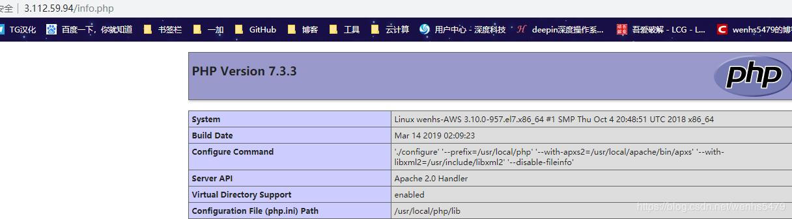

源码安装包管理

文章目录
1. 源码包基本概述
在linux环境下面安装源码包是比较常见的, 早期运维管理工作中，大部分软件都是通过源码安装的。那么安装一个源码包，是需要我们自己把源代码编译成二进制的可执行文件。
源码包的编译用到了linux系统里的编译器，通常源码包都是用C语言开发的，这也是因为C语言为linux上最标准的程序语言。Linux上的C语言编译器叫做gcc，利用它就可以把C语言变成可执行的二进制文件。所以如果你的机器上没有安装gcc就没有办法去编译源码。可以使用yum -y install gcc来完成安装。
2. 源码包的好处
- 自定义修改源代码
- 定制需要的相关功能
- 新版软件优先更新源码
3. 源码包的获取
官方网站, 可以获得最新的软件包
4. 源码包分类
- 源码格式（需要编译安装）
- 二进制格式（解压后可以直接使用）
5. 源码包的安装
- 编译需要编译环境，开发环境，开发库，开发工具。
- 常用的编译环境有c、c++、perl、java、python5种
- c环境的编译器：gcc（GNU C Complier）
- c++环境的编译器：g++
- make：c、c++的统一项目管理工具，编译时有可能调用gcc也有可能调用g++。使用makefile文件定义make按何种次序去编译源程序文件中的源程序
源码安装三部曲（常见）：
第一步: ./configure（定制组件）
1.指定安装路径，例如 --prefix=/opt/nginx-1.12 2.启用或禁用某项功能, 例如 --enable-ssl 3.和其它软件关联，例如--with-pcre 4.检查安装环境，例如是否有编译器 gcc，是否满足软件的依赖需求 5.检测通过后生成Makefile文件
第二步: make
1.执行make命令进行编译, 可以使用-j指定CPU核心数进行编译 2.按Makefile文件进行编译, 编译成可执行二进制文件 3.生成各类模块和主程序
第三步: make install
1.按Makefile定义好的路径拷贝至安装目录中
上面介绍的源码三部曲不能百分百通用于所有源码包, 也就是说源码包的安装并非存在标准安装步骤，但是大部分源码安装都是类似的步骤
建议:
拿到源码包解压后，然后进入到目录找相关的帮助文档，通常会以INSTALL或者README为文件名
5.1 configure脚本的功能
- 让用户选定编译特性
- 检查编译环境是否符合程序编译的基本需要
5.2 编译安装注意事项
- 如果安装时不是使用的默认路径，则必须要修改PATH环境变量，以能够识别此程序的二进制文件路径；
- 默认情况下，系统搜索库文件的路径只有/lib，/usr/lib
1 2 3 4 |
/etc/ld.so.conf和/etc/ls.so.conf.d/*.conf //配置文件 /etc/ld.so.cache //缓存文件 -v //显示重新搜索库的过程 -p //打印出系统启动时自动加载并缓存到内存中的可用库文件名及文件路径映射关系 |
- 头文件：输出给系统
- man文件路径：安装在--prefix指定的目录下的man目录
5.3 源码包编译实例
下面通过编译安装nginx来深入理解源码包安装
1 2 3 4 5 6 7 8 9 10 11 12 13 14 15 16 17 18 19 20 21 22 23 24 25 26 27 28 29 30 31 32 33 34 35 36 37 38 39 40 41 42 43 |
1.基础环境准备 [root@localhost ~]# yum -y install gcc gcc-c++ make wget 2.下载源码包(源码包一定要上官方站点下载，其他站点不安全) [root@localhost ~]# cd /usr/src [root@localhost src]# wget http://nginx.org/download/nginx-1.12.2.tar.gz 3.解压源码包,并进入相应目录 [root@localhost src]# tar xf nginx-1.12.2.tar.gz [root@localhost src]# cd nginx-1.12.2 4.配置相关的选项，并生成Makefile [root@localhost nginx-1.12.2]# ./configure --help|head --help print this message --prefix=PATH set installation prefix --sbin-path=PATH set nginx binary pathname --modules-path=PATH set modules path --conf-path=PATH set nginx.conf pathname --error-log-path=PATH set error log pathname --pid-path=PATH set nginx.pid pathname --lock-path=PATH set nginx.lock pathname 后面的内容省略了，使用 ./configure --help 命令查看可以使用的选项 一般常用的有 --prefix=PREFIX 这个选项的意思是定义软件包安装到哪里 建议，源码包都是安装在/opt/目录下 5.指定编译参数 [root@localhost nginx-1.12.2]# ./configure --prefix=/opt/nginx-1.12.2 6.验证这一步命令是否成功, 非0的都不算成功 [root@localhost nginx-1.12.2]# echo $? 0 7.编译并安装 [root@localhost nginx-1.12.2]# make [root@localhost nginx-1.12.2]# make install [root@localhost nginx-1.12.2]# echo $? 8.建立软链接 [root@localhost nginx-1.12.2]# ln -s /opt/nginx-1.12.2 /opt/nginx |
源码编译报错信息处理
1 2 3 4 5 6 7 8 9 10 11 12 13 14 15 16 17 18 19 20 21 22 23 24 25 26 27 28 29 30 31 32 33 34 35 36 |
[root@wenhs-AWS nginx-1.14.2]# ./configure checking for OS + Linux 3.10.0-957.el7.x86_64 x86_64 checking for C compiler ... not found ./configure: error: C compiler cc is not found 解决方案 [root@wenhs-AWS nginx-1.14.2]# yum -y install gcc gcc-c++ make ./configure: error: the HTTP rewrite module requires the PCRE library. You can either disable the module by using --without-http_rewrite_module option, or install the PCRE library into the system, or build the PCRE library statically from the source with nginx by using --with-pcre=<path> option. 解决方案 [root@wenhs-AWS nginx-1.14.2]# yum install -y pcre-devel ./configure: error: the HTTP gzip module requires the zlib library. You can either disable the module by using --without-http_gzip_module option, or install the zlib library into the system, or build the zlib library statically from the source with nginx by using --with-zlib=<path> option. 解决方案: [root@wenhs-AWS nginx-1.14.2]# yum -y install zlib-devel ./configure: error: SSL modules require the OpenSSL library. You can either do not enable the modules, or install the OpenSSL library into the system, or build the OpenSSL library statically from the source with nginx by using --with-openssl=<path> option. 解决方案 [root@localhost ~]# yum -y install openssl-devel |
实验
1.源码安装nginx
1 2 3 4 5 6 7 8 9 10 11 12 13 14 15 16 17 18 19 20 21 22 23 24 25 26 27 28 29 30 31 32 33 34 35 36 37 38 39 40 41 42 |
[root@wenhs-AWS ]# yum install -y pcre.devel
[root@wenhs-AWS ]#wget http://nginx.org/download/nginx-1.14.2.tar.gz
[root@wenhs-AWS ]#tar xf nginx-1.14.2.tar.gz
[root@wenhs-AWS ]#cd nginx-1.14.2
[root@wenhs-AWS nginx-1.14.2]#./configure --prefix=/usr/local/nginx --with-pcre
发现上面三次报错,以免文章过长,这里就不写了
另外,第一次编译的时候,没有指定--with-pcre,报make:No rule to make target `build', needed by `default'. Stop.的错误,但是make已经安装,于是乎删掉重新编译,加上--with-pcre,一遍成功
[root@wenhs-AWS nginx-1.14.2]#make && make install
[root@wenhs-AWS nginx-1.14.2]#/usr/local/nginx/sbin/nginx
[root@wenhs-AWS nginx-1.14.2]#ss -antl
State Recv-Q Send-Q Local Address:Port Peer Address:Port
LISTEN 0 128 *:80 *:*
LISTEN 0 128 *:22 *:*
LISTEN 0 100 127.0.0.1:25 *:*
LISTEN 0 128 :::22 :::*
LISTEN 0 100 ::1:25 :::*
[root@wenhs-AWS nginx-1.14.2]#curl http://103.4.11.215
<!DOCTYPE html>
<html>
<head>
<title>Welcome to nginx!</title>
<style>
body {
width: 35em;
margin: 0 auto;
font-family: Tahoma, Verdana, Arial, sans-serif;
}
</style>
</head>
<body>
<h1>Welcome to nginx!</h1>
<p>If you see this page, the nginx web server is successfully installed and
working. Further configuration is required.</p>
<p>For online documentation and support please refer to
<a href="http://nginx.org/">nginx.org</a>.<br/>
Commercial support is available at
<a href="http://nginx.com/">nginx.com</a>.</p>
<p><em>Thank you for using nginx.</em></p>
</body>
</html> |
2.源码安装apache
1 2 3 4 5 6 7 8 9 |
免得端口占用,上题影响这题结果,先把nginx关闭。 [root@wenhs-AWS ~]# /usr/local/nginx/sbin/nginx -s stop [root@wenhs-AWS ~]# ss -antl State Recv-Q Send-Q Local Address:Port Peer Address:Port LISTEN 0 128 *:22 *:* LISTEN 0 100 127.0.0.1:25 *:* LISTEN 0 128 :::22 :::* LISTEN 0 100 ::1:25 :::* [root@wenhs-AWS ~]# |
1 2 3 4 5 6 7 8 9 10 11 12 13 14 15 16 17 18 19 20 21 22 23 24 25 26 27 28 29 30 31 32 33 34 35 36 37 38 39 40 41 42 43 44 45 46 47 48 49 50 51 52 53 54 55 56 57 58 59 60 61 62 63 64 65 66 67 68 69 70 71 72 73 74 75 76 77 78 79 80 81 82 83 84 85 86 87 88 89 90 91 92 93 94 95 96 97 98 99 100 101 102 103 104 105 106 107 108 109 110 111 112 113 114 115 116 117 118 119 120 121 122 123 124 125 126 127 128 129 130 131 132 133 134 135 136 137 138 139 140 141 142 143 144 145 146 147 148 149 150 151 152 153 154 155 156 157 158 159 160 161 162 163 164 165 166 167 168 169 170 171 172 173 174 175 176 177 178 179 180 181 182 183 184 185 186 187 188 189 190 191 192 |
[root@wenhs-AWS ]#wget https://www-us.apache.org/dist/httpd/httpd-2.4.38.tar.gz
[root@wenhs-AWS ]#wget https://www-us.apache.org/dist/apr/apr-1.6.5.tar.gz
[root@wenhs-AWS ]#wget https://www-us.apache.org/dist/apr/apr-util-1.6.1.tar.gz
[root@wenhs-AWS ~]# tar xf httpd-2.4.38.tar.gz
[root@wenhs-AWS ~]# tar xf apr-1.6.5.tar.gz
[root@wenhs-AWS ~]# tar xf apr-util-1.6.1.tar.gz
[root@wenhs-AWS ~]# ls
anaconda-ks.cfg apr-util-1.6.1.tar.gz nginx-1.14.2
apr-1.6.5 httpd-2.4.38 nginx-1.14.2.tar.gz
apr-1.6.5.tar.gz httpd-2.4.38.tar.gz original-ks.cfg
apr-util-1.6.1 mysql-5.7.25-1.el7.x86_64.rpm-bundle.tar
[root@wenhs-AWS ~]# cd apr-1.6.5/
[root@wenhs-AWS apr-1.6.5]# ls
apr-config.in buildconf dso libapr.rc NOTICE support
apr.dep build.conf emacs-mode LICENSE NWGNUmakefile tables
apr.dsp build-outputs.mk encoding locks passwd test
apr.dsw CHANGES file_io Makefile.in poll threadproc
apr.mak CMakeLists.txt helpers Makefile.win random time
apr.pc.in config.layout include memory README tools
apr.spec configure libapr.dep misc README.cmake user
atomic configure.in libapr.dsp mmap shmem
build docs libapr.mak network_io strings
[root@wenhs-AWS apr-1.6.5]# ./configure --prefix=/usr/local/apr/
checking build system type... x86_64-pc-linux-gnu
checking host system type... x86_64-pc-linux-gnu
checking target system type... x86_64-pc-linux-gnu
Configuring APR library
Platform: x86_64-pc-linux-gnu
checking for working mkdir -p... yes
APR Version: 1.6.5
checking for chosen layout... apr
......
configure: creating ./config.status
config.status: creating Makefile
config.status: WARNING: 'Makefile.in' seems to ignore the --datarootdir setting
config.status: creating include/apr.h
config.status: creating build/apr_rules.mk
config.status: creating build/pkg/pkginfo
config.status: creating apr-1-config
config.status: creating apr.pc
config.status: creating test/Makefile
config.status: creating test/internal/Makefile
config.status: creating include/arch/unix/apr_private.h
config.status: executing libtool commands
rm: cannot remove 'libtoolT': No such file or directory
config.status: executing default commands
[root@wenhs-AWS apr-1.6.5]# echo $? #由于不清楚到底有没有报错,查询一下是否运行成功
0 #成功了
[root@wenhs-AWS apr-1.6.5]# make
......
usr/local/apr//build-1,' < build/apr_rules.mk > build/apr_rules.out
make[1]: Leaving directory `/root/apr-1.6.5'
[root@wenhs-AWS apr-1.6.5]# echo $?
0
[root@wenhs-AWS apr-1.6.5]# make install
make[1]: Entering directory `/root/apr-1.6.5'
make[1]: Nothing to be done for `local-all'.
make[1]: Leaving directory `/root/apr-1.6.5'
...
/usr/bin/install -c -m 644 /root/apr-1.6.5/build/find_apr.m4 /usr/local/apr//build-1
/usr/bin/install -c -m 755 apr-config.out /usr/local/apr//bin/apr-1-config
[root@wenhs-AWS apr-1.6.5]# echo $?
0
[root@wenhs-AWS ~]# cd ../apr-util-1.6.1/
[root@wenhs-AWS apr-util-1.6.1]# ./configure --prefix=/usr/local/apr-util/ --with-apr=/usr/local/apr/
checking build system type... x86_64-pc-linux-gnu
checking host system type... x86_64-pc-linux-gnu
checking target system type... x86_64-pc-linux-gnu
......
config.status: creating test/Makefile
config.status: creating include/private/apu_config.h
config.status: executing default commands
[root@wenhs-AWS apr-util-1.6.1]# echo $?
0
[root@wenhs-AWS apr-util-1.6.1]# make
make[1]: Entering directory `/root/apr-util-1.6.1'
.......
#include <expat.h>
^
compilation terminated.
make[1]: *** [xml/apr_xml.lo] Error 1
make[1]: Leaving directory `/root/apr-util-1.6.1'
make: *** [all-recursive] Error 1
[root@wenhs-AWS apr-util-1.6.1]# yum install -y expat-devel
[root@wenhs-AWS apr-util-1.6.1]# make
make[1]: Entering directory `/root/apr-util-1.6.1'
.......
sed 's,^\(location=\).*$,\1installed,' < apu-1-config > apu-config.out
make[1]: Leaving directory `/root/apr-util-1.6.1'
[root@wenhs-AWS apr-util-1.6.1]# echo $?
0
[root@wenhs-AWS apr-util-1.6.1]# make install
make[1]: Entering directory `/root/apr-util-1.6.1'
make[1]: Nothing to be done for `local-all'.
make[1]: Leaving directory `/root/apr-util-1.6.1'
....
/usr/bin/install -c -m 644 aprutil.exp /usr/local/apr-util//lib
/usr/bin/install -c -m 755 apu-config.out /usr/local/apr-util//bin/apu-1-config
[root@wenhs-AWS apr-util-1.6.1]# echo $?
0
[root@wenhs-AWS apr-util-1.6.1]# cd ../httpd-2.4.38/
[root@wenhs-AWS httpd-2.4.38]# ./configure --prefix=/usr/local/apache --with-apr=/usr/local/apr/ --with-apr-util=/usr/local/apr-util
checking for chosen layout... Apache
checking for working mkdir -p... yes
......
Server Version: 2.4.38
Install prefix: /usr/local/apache
C compiler: gcc -std=gnu99
CFLAGS: -g -O2 -pthread
CPPFLAGS: -DLINUX -D_REENTRANT -D_GNU_SOURCE
LDFLAGS:
LIBS:
C preprocessor: gcc -E
[root@wenhs-AWS httpd-2.4.38]# echo $?
0
[root@wenhs-AWS httpd-2.4.38]# make
.....
collect2: error: ld returned 1 exit status
make[2]: *** [htpasswd] Error 1
make[2]: Leaving directory `/root/httpd-2.4.38/support'
make[1]: *** [all-recursive] Error 1
make[1]: Leaving directory `/root/httpd-2.4.38/support'
make: *** [all-recursive] Error 1
[root@wenhs-AWS httpd-2.4.38]# yum install -y libxml2-devel
安装后重新编译还是失败,好像要重新安装apr-util
[root@wenhs-AWS httpd-2.4.38]# rm -rf /usr/local/apr-util
[root@wenhs-AWS ~]# rm -rf apr-util-1.6.1
[root@wenhs-AWS ~]# tar xf apr-util-1.6.1.tar.gz
[root@wenhs-AWS ~]# cd apr-util-1.6.1/
[root@wenhs-AWS apr-util-1.6.1]# ./configure --prefix=/usr/local/apr-util/ --with-apr=/usr/local/apr/
[root@wenhs-AWS apr-util-1.6.1]# make && make install
一切顺利,安装过一次
[root@wenhs-AWS apr-util-1.6.1]# cd ../httpd-2.4.38/
[root@wenhs-AWS httpd-2.4.38]# make
.....
make[4]: Leaving directory `/root/httpd-2.4.38/modules/mappers'
make[3]: Leaving directory `/root/httpd-2.4.38/modules/mappers'
make[2]: Leaving directory `/root/httpd-2.4.38/modules'
make[2]: Entering directory `/root/httpd-2.4.38/support'
make[2]: Leaving directory `/root/httpd-2.4.38/support'
make[1]: Leaving directory `/root/httpd-2.4.38'
[root@wenhs-AWS httpd-2.4.38]# echo $?
0
[root@wenhs-AWS httpd-2.4.38]#make install
......
mkdir /usr/local/apache/man/man8
mkdir /usr/local/apache/manual
make[1]: Leaving directory `/root/httpd-2.4.38'
[root@wenhs-AWS httpd-2.4.38]# echo $?
0
[root@wenhs-AWS httpd-2.4.38]# mkdir /usr/include/apache
[root@wenhs-AWS httpd-2.4.38]# ln -s /usr/local/apache/include/* /usr/include/apache
[root@wenhs-AWS httpd-2.4.38]# service httpd start
Usage: /etc/init.d/httpd [-D name] [-d directory] [-f file]
[-C "directive"] [-c "directive"]
[-k start|restart|graceful|graceful-stop|stop]
[-v] [-V] [-h] [-l] [-L] [-t] [-T] [-S] [-X]
Options:
-D name : define a name for use in <IfDefine name> directives
-d directory : specify an alternate initial ServerRoot
-f file : specify an alternate ServerConfigFile
-C "directive" : process directive before reading config files
-c "directive" : process directive after reading config files
-e level : show startup errors of level (see LogLevel)
-E file : log startup errors to file
-v : show version number
-V : show compile settings
-h : list available command line options (this page)
-l : list compiled in modules
-L : list available configuration directives
-t -D DUMP_VHOSTS : show parsed vhost settings
-t -D DUMP_RUN_CFG : show parsed run settings
-S : a synonym for -t -D DUMP_VHOSTS -D DUMP_RUN_CFG
-t -D DUMP_MODULES : show all loaded modules
-M : a synonym for -t -D DUMP_MODULES
-t -D DUMP_INCLUDES: show all included configuration files
-t : run syntax check for config files
-T : start without DocumentRoot(s) check
-X : debug mode (only one worker, do not detach)
[root@wenhs-AWS httpd-2.4.38]# service httpd -k start
AH00558: httpd: Could not reliably determine the server's fully qualified domain name, using fe80::869:6bff:fe89:6872. Set the 'ServerName' directive globally to suppress this message
[root@wenhs-AWS httpd-2.4.38]# ervice httpd -T
-bash: ervice: command not found
[root@wenhs-AWS httpd-2.4.38]# service httpd -T
AH00558: httpd: Could not reliably determine the server's fully qualified domain name, using fe80::869:6bff:fe89:6872. Set the 'ServerName' directive globally to suppress this message
httpd (pid 12017) already running
[root@wenhs-AWS httpd-2.4.38]# netstat -antp|grep 80
tcp6 0 0 :::80 :::* LISTEN 12017/httpd
[root@wenhs-AWS httpd-2.4.38]# curl http://3.112.59.94 #避免浪费资源,晚上亚马逊云主机会关机,所以再开机公网IP会变,今天IP是下面这个
<html><body><h1>It works!</h1></body></html> |
关于为什么监听到只有ipv6地址问题,可以看这个,但是访问ipv4地址还是可以访问到的 本题只是让我们学会如何源码安装apache服务,过多的设置以后回学,在这里就不修改了 另外,本题排版不是很好,点击这个,跳转到一位大神的,个人感觉十分详细
3.源码安装PHP
1 2 3 4 5 6 7 8 9 10 11 12 13 14 15 16 17 18 19 20 21 22 23 24 25 26 27 28 29 30 31 32 33 34 35 36 37 38 39 40 41 42 43 44 45 46 47 48 49 50 51 52 53 54 55 56 57 58 59 60 61 62 63 |
[root@wenhs-AWS ~]# wget http://jp2.php.net/distributions/php-7.3.3.tar.bz2 --2019-03-14 01:43:38-- http://jp2.php.net/distributions/php-7.3.3.tar.bz2 Resolving jp2.php.net (jp2.php.net)... 49.212.134.217 Connecting to jp2.php.net (jp2.php.net)|49.212.134.217|:80... connected. HTTP request sent, awaiting response... 200 OK Length: 14813435 (14M) [application/octet-stream] Saving to: ‘php-7.3.3.tar.bz2’ 100%[=============================================>] 14,813,435 20.0MB/s in 0.7s 2019-03-14 01:43:39 (20.0 MB/s) - ‘php-7.3.3.tar.bz2’ saved [14813435/14813435] [root@wenhs-AWS ~]# ll total 541696 -rw-------. 1 root root 7329 Oct 17 12:27 anaconda-ks.cfg drwxr-xr-x. 28 1001 1001 4096 Mar 13 10:35 apr-1.6.5 -rw-r--r--. 1 root root 1073556 Sep 14 04:07 apr-1.6.5.tar.gz drwxr-xr-x. 21 1001 1001 4096 Mar 13 11:09 apr-util-1.6.1 -rw-r--r--. 1 root root 554301 Oct 22 2017 apr-util-1.6.1.tar.gz drwxr-sr-x. 12 root 40 4096 Mar 13 11:11 httpd-2.4.38 -rw-r--r--. 1 root root 9187294 Jan 21 15:03 httpd-2.4.38.tar.gz -rw-r--r--. 1 root root 528015360 Dec 24 05:44 mysql-5.7.25-1.el7.x86_64.rpm-bundle.tar drwxr-xr-x. 9 1001 1001 186 Mar 13 10:05 nginx-1.14.2 -rw-r--r--. 1 root root 1015384 Dec 4 14:58 nginx-1.14.2.tar.gz -rw-------. 1 root root 6664 Oct 17 12:27 original-ks.cfg -rw-r--r--. 1 root root 14813435 Mar 5 14:30 php-7.3.3.tar.bz2 [root@wenhs-AWS ~]# tar xf php-7.3.3.tar.bz2 tar (child): lbzip2: Cannot exec: No such file or directory tar (child): Error is not recoverable: exiting now tar: Child returned status 2 tar: Error is not recoverable: exiting now [root@wenhs-AWS ~]# yum -y install bzip2 [root@wenhs-AWS ~]# tar xf php-7.3.3.tar.bz2 [root@wenhs-AWS ~]# cd php-7.3.3/ [root@wenhs-AWS php-7.3.3]# ./configure --prefix=/usr/local/php --with-apxs2=/usr/local/apache/bin/apxs --with-libxml2=/usr/include/libxml2 configure: WARNING: unrecognized options: --with-libxml2 checking for grep that handles long lines and -e... /usr/bin/grep ....... config.status: creating main/php_config.h config.status: executing default commands configure: WARNING: unrecognized options: --with-libxml2 [root@wenhs-AWS php-7.3.3]# echo $? 0 [root@wenhs-AWS php-7.3.3]# make ....... make: *** [ext/fileinfo/libmagic/apprentice.lo] Error 1 #这是因为系统的内存不足1G造成的,然后需要加上 --disable-fileinfo,然重新编译即可； [root@wenhs-AWS php-7.3.3]# ./configure --prefix=/usr/local/php --with-apxs2=/usr/local/apache/bin/apxs --with-libxml2=/usr/include/libxml2 --disable-fileinfo [root@wenhs-AWS php-7.3.3]# make ....... Don't forget to run 'make test'. [root@wenhs-AWS php-7.3.3]# echo $? 0 [root@wenhs-AWS php-7.3.3]# make install ...... Wrote PEAR system config file at: /usr/local/php/etc/pear.conf You may want to add: /usr/local/php/lib/php to your php.ini include_path /root/php-7.3.3/build/shtool install -c ext/phar/phar.phar /usr/local/php/bin ln -s -f phar.phar /usr/local/php/bin/phar Installing PDO headers: /usr/local/php/include/php/ext/pdo/ [root@wenhs-AWS php-7.3.3]# echo $? 0 到这里就安装完成了 |
拓展,把PHP和apache结合
1 2 3 4 5 6 7 8 9 10 11 12 13 14 15 16 17 18 19 20 21 22 23 24 |
[root@wenhs-AWS php-7.3.3]# vim /usr/local/apache/conf/httpd.conf #加载这个模块 LoadModule php7_module modules/libphp7.so #让apache解析PHP代码 AddHandler php7-script .php #让apache解析html里的PHP代码 AddType application/x-httpd-php .html [root@wenhs-AWS php-7.3.3]# vim /usr/local/apache/htdocs/info.php <?php phpinfo(); ?> [root@wenhs-AWS php-7.3.3]# ls /usr/local/php/ bin etc include lib php var [root@wenhs-AWS php-7.3.3]# mkdir /usr/bin/php [root@wenhs-AWS php-7.3.3]# ln -s /usr/local/php/bin/* /usr/bin/php/ [root@wenhs-AWS php-7.3.3]# mkdir /usr/lib/php [root@wenhs-AWS php-7.3.3]# ln -s /usr/local/php/lib/ /usr/lib/php/ [root@wenhs-AWS php-7.3.3]# service httpd -k stop [root@wenhs-AWS php-7.3.3]# service httpd -k start #用restart回显没有,不直观 httpd (pid 26025) already running |

源码安装脚本